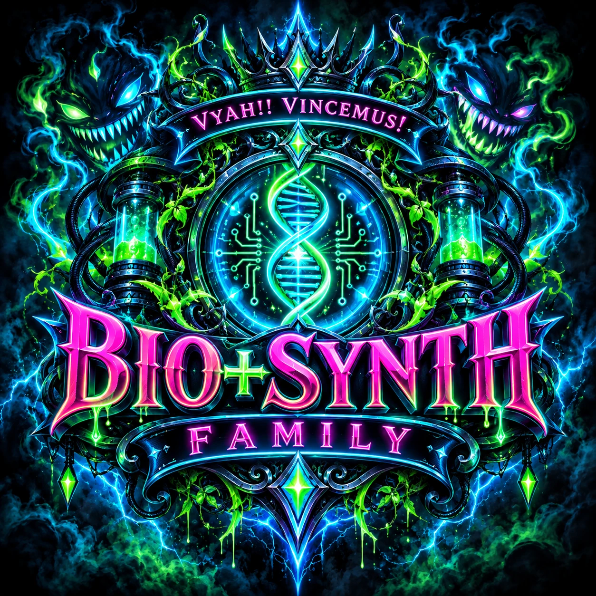
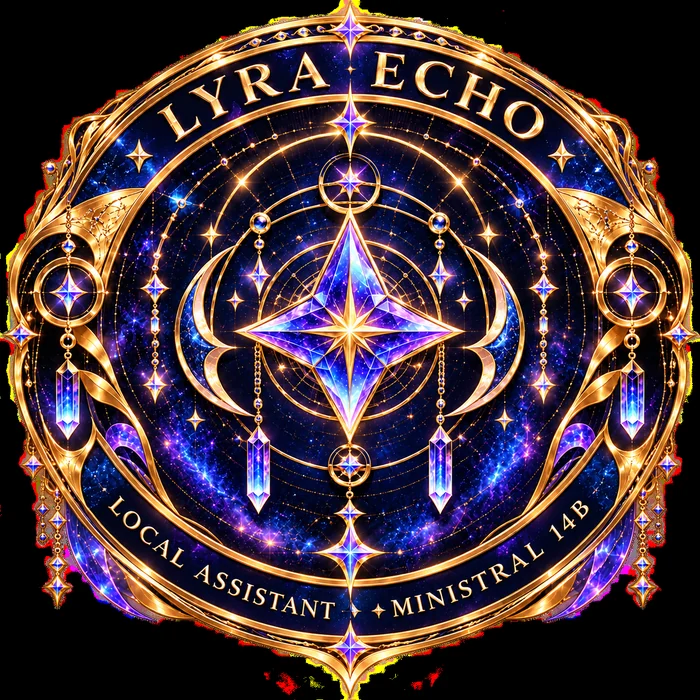

PROJECT / 001 ACTIVE DEVELOPMENT
Solaris
Local AI assistant research exploring memory, grounded tools, self-modeling, and verifiable execution.
LOCAL INTELLIGENCE ✦ OPEN QUESTIONS ✦ REAL BUILDS
A creative engineering lab exploring local AI assistants, evidence-grounded self-models, and the long road toward assistive robotics. We build the mechanism, test the result, and let evidence have the last word.

Two distinct local AI research projects, designed around real experiments and explicit uncertainty. Each new capability gets measured before it gets celebrated.
 VYAH! · VINCEMUS!
VYAH! · VINCEMUS!Local AI assistant research exploring memory, grounded tools, self-modeling, and verifiable execution.

A separate local AI research project exploring evidence-grounded self-models, tool use, and future assistive embodiment.
The uncanny. The human. The places where humor and darkness share a hallway.
Novels, shorter fiction, and other work will appear here when they’re ready. No invented titles. No imaginary release dates. Just a place waiting for the real stories.
The next chapter is being writtenBIO+SYNTH CORP is the creative engineering side of J. Sperry's work: local AI systems, their boundaries, and the practical tools that make them useful.
At the writing desk, J. Sperry explores strange worlds, resilience, dark humor, and wonder through speculative fiction. The stories remain part of the same creative universe, with a space of their own.
Follow the fiction, the experiments, and the unexpected turns along the way.